IBM Connections
- ?
 IBM
IBM
Connections Data Population Help
Let's take a look at an example of an activity.
Back
This block script...
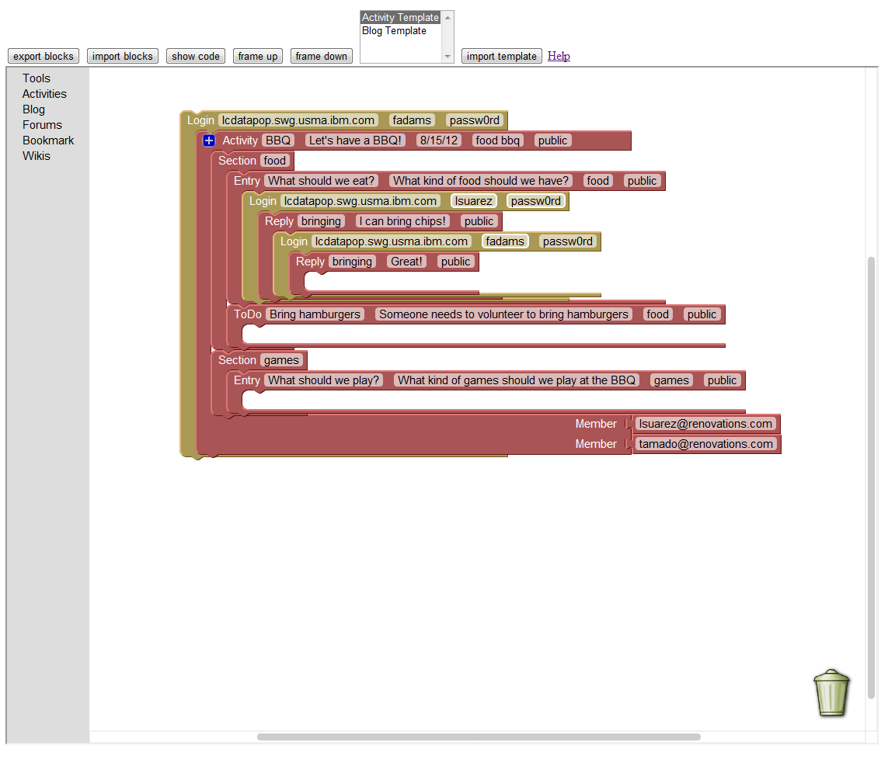
translates to this activity.
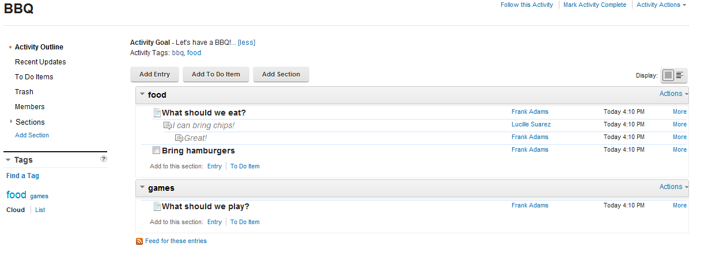
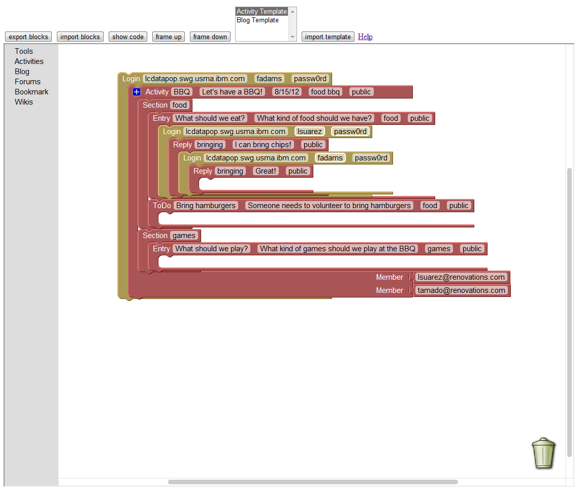
translates to this activity.
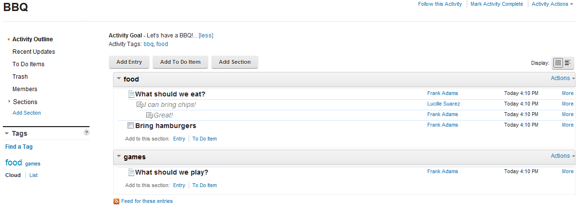
Getting started with Login
Back
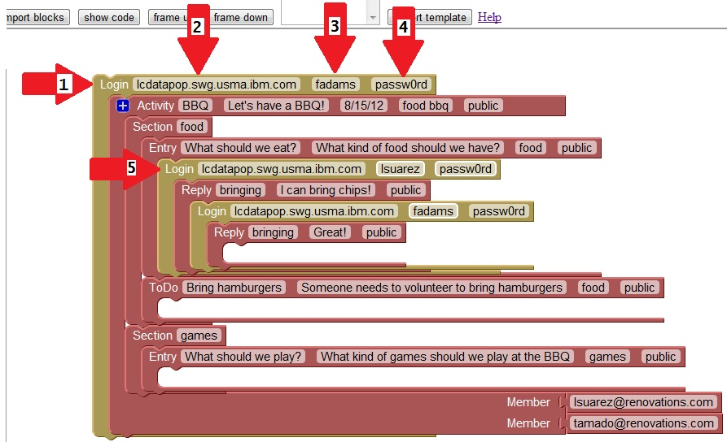
- The login block
- Url field of the login block
- username for the login block
- Password field for the login block
- Another use for the login block
Adding aditional member slots
Back
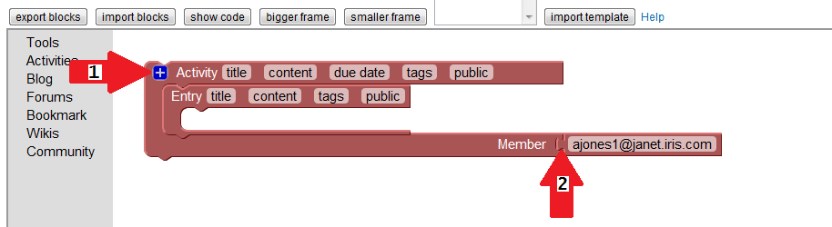
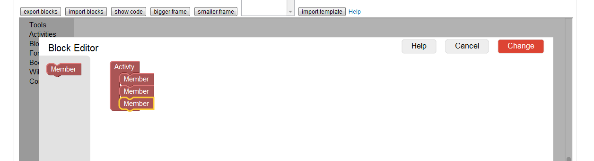
In order to add extra member slots, drag the member blocks into the activity block. When you click the change button, you will be returned to the main script composition screen.
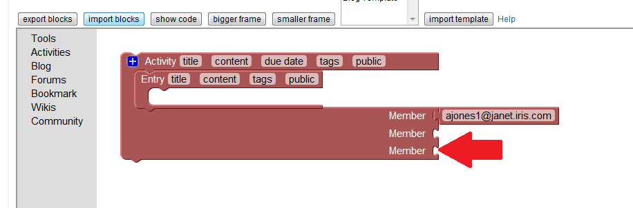
You will now see extra member slots in the block.
- The block modifier button
- Member slots
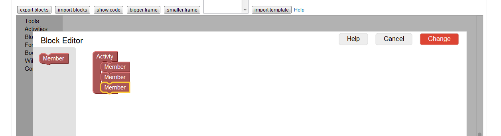
In order to add extra member slots, drag the member blocks into the activity block. When you click the change button, you will be returned to the main script composition screen.
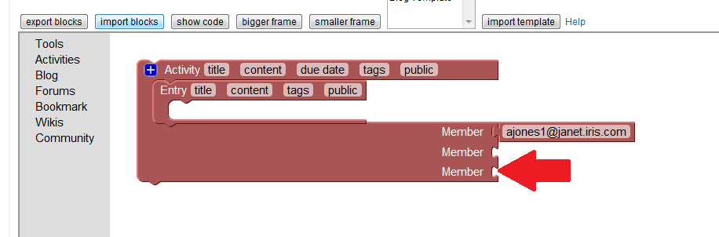
You will now see extra member slots in the block.
Duplicating blocks
Back
One of the more useful features of this site is the ability to duplicate blocks. This allows you to quickly create repeated information.
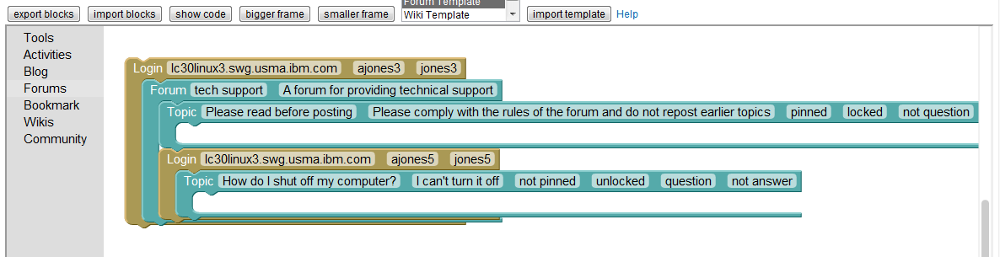
To duplicate a block, right click on the block. This brings up a context menu.
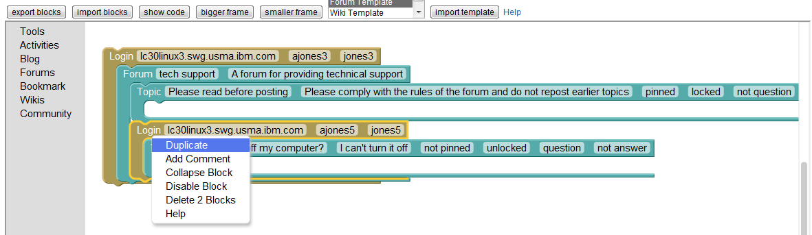 Clicking on the duplicate option will create a copy of the selected blocks.
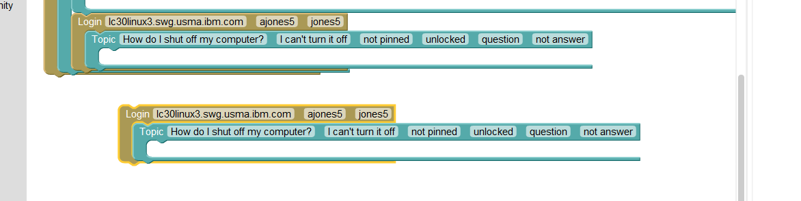
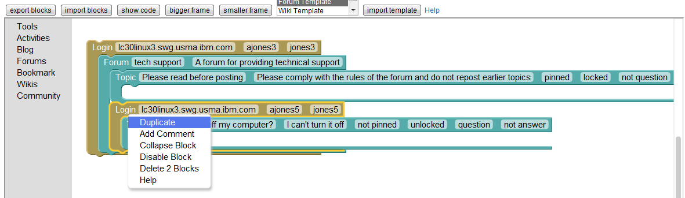 Clicking on the duplicate option will create a copy of the selected blocks.
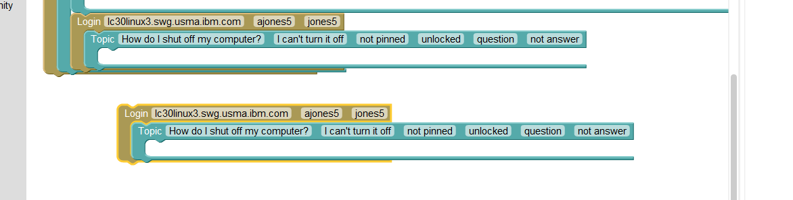
The Community block
Back
The Community block is different from the others because it can contain other types of blocks. It is possible to add bookmarks and forum topics and replies to a community, and they will automatically be applied to the built in forum and book mark community widgets.
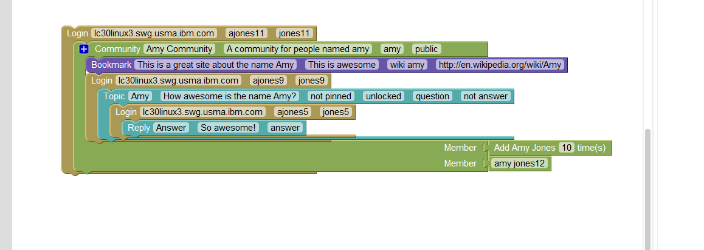
Known Issues
Back- Sometimes, when you click to edit a field, the text gets highlighted but you can't type. Click out of the field and then click back in and wait a second for it to catch up, it should let you type now.
- When you import a template, sometimes it doesn't show up until you click or scroll in the workspace window.
- When naming an export, if the "Export To File" button is disabled (greyed out), change the name and click outside the text box and somewhere else onto the page to reenable the "Export To File" button.
| Licensed Materials - Property of IBM Corp. 5724-S68 © IBM Corporation 2007, 2012. IBM, the IBM logo, ibm.com and Lotus are trademarks of IBM Corporation in the United States, other countries, or both. U.S. Government Users Restricted Rights: Use, duplication or disclosure restricted by GSA ADP Schedule Contract with IBM Corp. Please see the About page for further information. |